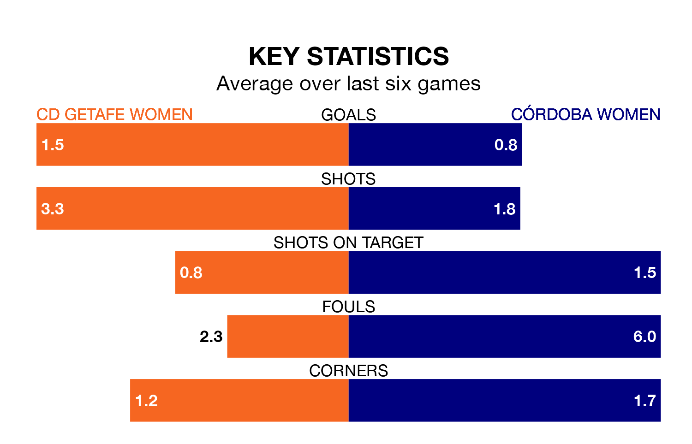

Córdoba Women travel for Sunday's early match against CD Getafe Women looking to bounce back from defeat last time out in Segunda Federación Femenina.
Córdoba, who sit zero in the league after 17 games, fell to a 4-0 home defeat to UD Tenerife II Women on January 21.
They face a Getafe Women side who also lost their last match, a 2-0 defeat to Cacereño II Women, and who sit seventh in the table.
With 30 goals in 17 games so far this season, Getafe Women are the league's joint-third-highest scorers with 1.8 goals per game. And they are conceding fewer than average, letting in 17 goals at a rate of 1.0 per game.
Córdoba, meanwhile, are below average scorers, with 1.0 goal per game, compared to a league average of 1.3. They have conceded 1.6 goals per game.
The hosts are in mixed form in Segunda Federación Femenina, with two wins and three draws from their last six games.
With a win and two draws over that period, the away team's form is worse – they have taken five points from 18, compared to Getafe Women's nine.
Updated: 08:51 (UTC), 25/01/24